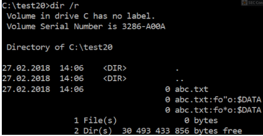

ADS can be used to hide data (dir command without the /r switch will not display them; explorer.exe will also not show them; We will later see how we can even hide from the /r dir switch…)
ADS has another great property – we can add an ADS to a folder. To be allowed to do this we must own the “create folders” permissions on the directory (and the folder name must not be a number). The important fact is that an ADS on a folder looks like a file from the parent folder!
For example, consider that an application allows to upload data and that uploaded data is stored in applicationFolder\uploadedData\. Moreover, the application allows to start scripts / applications from applicationFolder\ but not from applicationFolder\uploadedData\ (with a blacklist approach). If the user uploads a file named “:foo.ps1″, the system will create an ADS like applicationFolder\uploadedData:foo.ps1 and this file appears to be stored inside applicationFolder\ and therefore bypassing the security checks.
Another interesting fact is that ADS names can contain symbols which are normally forbidden for filenames like ” or * (you have to create these files using the native Windows API; cmd.exe filteres these characters):

This on it’s own can lead to several problems (e.g.: if the filename ends with ” and the path is enclosed by ”)
Basically, the syntax required to access a NTFS stream is the following:
<name>:<stream_name>:<stream_type>
- name refers the the resource, it can be a file (e.g. document.txt) or a folder (e.g. Windows)
- stream_name is the name of our compartment, when working with files, an empty stream name indicates the default stream, when dealing with folders, the default stream name will be “$I30″
- stream_type will be always $DATA when dealing with files or $INDEX_ALLOCATION for folders
When the stream_name is omitted, you are accessing the main stream. For example, the following NTFS streams are equivalent:
- myfile.txt
- myfile.txt:
- myfile.txt::$DATA
In the case of directories, the following NTFS streams are equivalent:
- mydir
- mydir:$I30:$INDEX_ALLOCATION
- mydir::$INDEX_ALLOCATION
How to create ADS
echo "test" > myfile:stream
mkdir "myfolder:$I30:$INDEX_ALLOCATION"
How to read ADS
more < myfile:stream
more < myfile:stream:$DATA
dir C:\Windows:$I30:$INDEX_ALLOCATION
How can I enumerate NTFS data streams on Windows?
Powershell
get-item -Path d:\* -Stream *
Vista and above
dir /r
Sysinternals
streams -s c: